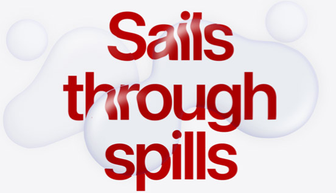
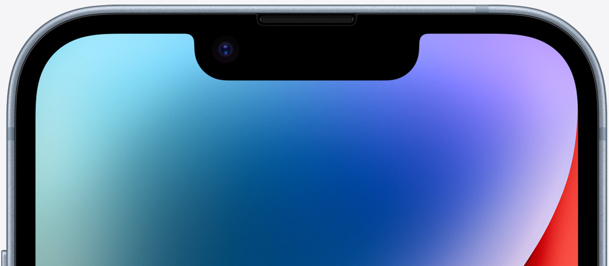
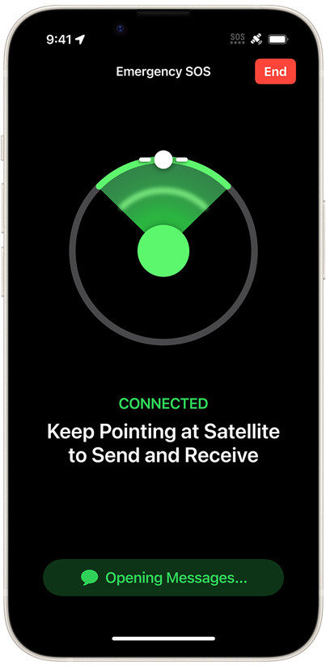

with water resistance1
Ceramic Shield
is tougher than any smartphone glass

Vital new safety features we hope you’ll never need.
Emergency SOS via satellite.
Peace of mind when you’re off the grid.
If you don’t have cell service or Wi‑Fi, iPhone lets you text emergency services over satellite.2
How on earth do you communicate via satellite?
Satellites are moving targets with low bandwidth. It can take minutes for messages to get through. Since every second counts, iPhone front-loads a few questions to assess your situation — just tap to respond. Then it shows you where to point to connect to a satellite.
Once connected, iPhone automatically sends your answers, location, Medical ID (if set up), and battery level to a dispatcher.

You must be outdoors with a clear view of the sky.
Since satellites are moving rapidly through space, iPhone will show you where to point to maintain your connection — and avoid obstructions such as mountains and heavy foliage.
Texting via satellite takes time..
In ideal conditions, you can send a message in less than 15 seconds. Under light foliage, it can take more than a minute.
Emergency SOS via satellite is included for free with iPhone 14 for two years.
An infrastructure of innovation.
Apple-designed components and software allow iPhone 14 antennas to connect to satellite frequencies. And since bandwidth is low, we created a compression algorithm that makes text messages three times smaller, speeding up communication.
On the ground, we route your text message through a complex infrastructure to emergency service providers. Only some accept texts. For those that don’t, we’ve set up emergency relay centers with Apple‑trained specialists who call for help on your behalf.